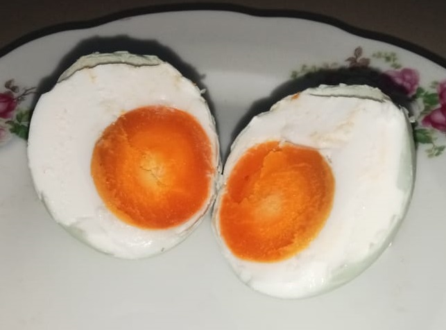

TENTANG KAMI
Selamat Datang di Telur Asin Habibah
Rumah Telur Asin Berkualitas
Di sini, kami memiliki hasrat untuk menghadirkan telur asin terbaik untuk Anda. Perjalanan kami dimulai pada tahun 2015 dengan misi sederhana yaitu memproduksi telur asin berkualitas tinggi dan lezat menggunakan metode tradisional yang dikombinasikan dengan standar kebersihan dan kontrol kualitas modern.
Berlokasi di Palembang, Telur Asin Habibah didirikan oleh Tunai Jaya, yang memiliki apresiasi mendalam terhadap seni membuat telur asin. Terinspirasi oleh resep kuno yang diwariskan turun-temurun, kami memulai pencarian untuk menciptakan telur asin yang sempurna, menyeimbangkan rasa, tekstur, dan nilai gizi.

PROSES
1 .SOURCING
Kami memulai dengan memilih telur bebek terbaik dari peternakan lokal yang bebas dan alami. Bebek yang dipelihara dalam lingkungan sehat dan alami, memastikan telur yang dihasilkan berkualitas tinggi.
2. PERSIAPAN
Setiap telur dibersihkan dan diperiksa dengan hati-hati sebelum direndam dalam larutan garam dan serbuk batu bata. Proses pengawetan tradisional ini adalah kunci untuk mengembangkan rasa gurih yang kaya dari telur asin kami.
3. PENGAWETAN
Telur dibiarkan mengawet selama periode yang tepat, memungkinkan garam meresap dan meningkatkan rasa sambil mempertahankan tekstur yang sempurna.
4. KONTROL KUALITAS
Setelah pengawetan, setiap telur menjalani pemeriksaan kualitas menyeluruh. Hanya telur terbaik yang masuk ke proses pengukusan.